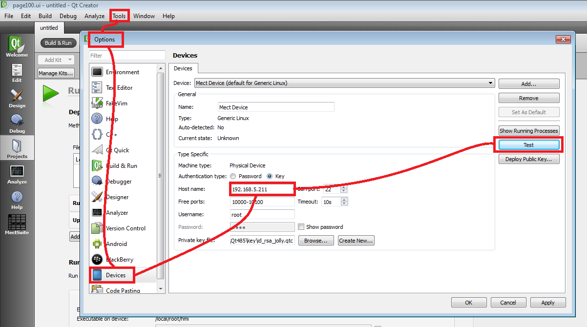

Per poter trasferire la propria applicazione dal pc al pannello operatore occorre collegare via cavo di rete il pannello operatore al PC oppure verificare che i due siano connessi tra loro.
La prima volta che si vuole mandare sul pannello l’eseguibile (Deploy) occorre selezionare “Projects” → “Run” e impostare i seguenti parametri:
Disabilitare, sotto la voce “Upload files via SFTP”, il flag “Incremental deployment”;
Cliccare su “Add Deploy Step” e selezionare “Run custom remote command”

Scrivere “stop” (tutto minuscolo) e spostare il blocco “Run custom remote command” di una posizione verso l’alto, tramite la freccia evidenziata in giallo (premere Details).

Il risultato finale dovrà essere il seguente:

Se necessario, si può specificare per il target un diverso indirizzo IP oppure la password nella dialog da “Tools → Options → Devices”.

E’ consigliabile effettuare un test per verificare che ci sia la connessione tra il PC e il pannello operatore; per far ciò occorre premere il pulsante “Test” presente nella parte destra della figura mostrata precedentemente.
Dopo aver impostato i parametri è possibile inviare il progetto al dispositivo cliccando il triangolo in figura (vedi cerchio giallo):